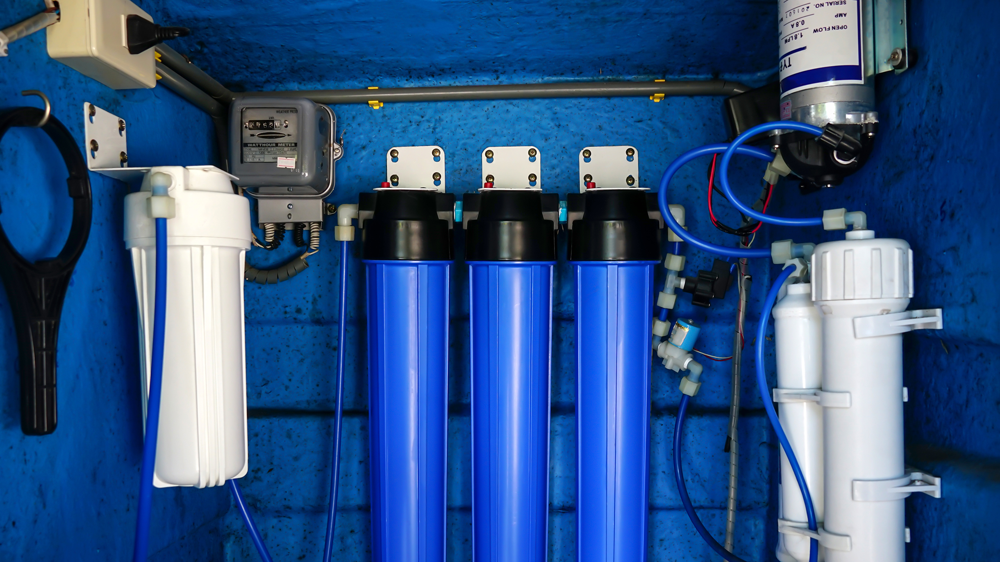

Установка фильтров для очистки воды в квартире

Значение питьевой воды для человека
Вода – незаменима в нашей жизни! Вода – основа жизни живого на планете, но, к сожалению, не все
понимают, что речь идёт именно о высококачественной питьевой воде. Источников массового загрязнения воды
в нашем мире полно, но, благо, есть компании, которые предоставляют установку специальных
водоочистительных фильтров.
Установка фильтра для воды – залог качественной питьевой воды для Вашей семьи! С помощью таких фильтров
можно очистить всю воду и употреблять уже очищенную за короткий промежуток времени питьевую воду.
Какие бывают разновидности питьевых фильтров?
Фильтры, основа которых – удаление примеси разными методами, бывают нескольких видов, как, например:
Проточные фильтры. Схема работы таких фильтров проста – вода протекает сквозь сетки и специальные уловители
фильтра, которые задерживают и оставляют грязь в них, а вода поступает в кран потребителя уже очищенной;
Очистители обратного осмоса. Отменно справляются с механическими и химическими видами загрязнения. Установка
фильтров для очистки воды обратного осмоса также позволит Вам употреблять обогащённую минералами воду.
Разнятся между собой за объёмами – есть очистители, объёмом до 10-и литров, а также на 12 и 15 литров;
Мембранные фильтры. Установка фильтра мембранного типа позволит пить очищенную воду со всем её природным
минеральным комплексом. С помощью современной мембраны и её тончайших полунепроницаемых пор фильтр очищает
воду от различных бактерий и микроорганизмов. Такой тип фильтра работает быстрее, нежели фильтры обратного
осмоса;
Установка фильтров механического типа позволит Вам очистить воду от механических типов загрязнений, которые
попадают в воду при её транспортировке по трубам.
Установка крана для фильтра питьевой воды поспособствует быстрой подаче уже очищенной, свежей, питьевой
воды. При этом очищенная вода, не теряет своих микроэлементов и минералов и прочих комплексов!
Как же установить фильтр для очищения воды?
Компания «Служба сантехников» предлагает каждому, желающему пить качественную воду. Установить
водоочистительное оборудование можно, позвонив специалистам компании, по номеру +7 (747)-156-09-22.
Компания предоставит монтаж фильтров для воды всех вышеперечисленных видов, чтобы Вы смогли наслаждаться
очищенной водой. Установка фильтров для воды в квартире – лёгкая задача для наших сотрудников.
С помощью специальных инструментов установить фильтры для очистки воды в доме, наши сотрудники смогут в
кратчайшие сроки! Установку фильтра для воды наши сотрудники смогут выполнить в течение двух часо
Какая стоимость установки фильтра для воды?
Цена установки фильтров для воды в квартире зависит от: типа фильтра и некоторых вариантов обустройства
кухни, которые могут повлиять на сложность установки оборудования. На установку фильтра для воды цена будет
приемлема каждому клиенту, у нас очень демократичные цены.
Уверяем Вас, что мы сможем установить фильтры для очистки воды в квартире не только по разумной цене, а
также быстро и в тоже время надёжно! Вы будете довольны, как качеством монтажа, так и самим фильтром!
Что в результате установки фильтра?
Всё, что Вам нужно для постоянной питьевой воды глубокой очистки в доме – установить фильтр для воды. Всё
просто! В результате, фильтр для воды даст Вашей семье круглосуточный доступ к воде, обогащённой природными
минералами и энергией!
Эффективная фильтрация воды, а также её обогащение – секрет Вашей радостной, здоровой и долгой жизни!
Установите фильтр для очистки воды, и Вы сможете наслаждаться питьевой водой в любое время!